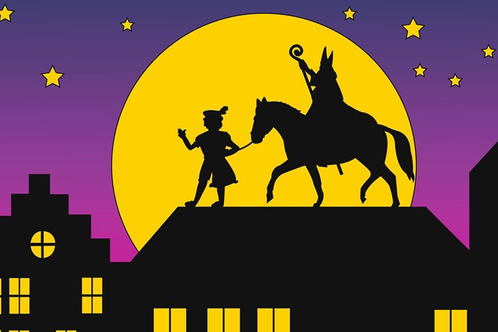
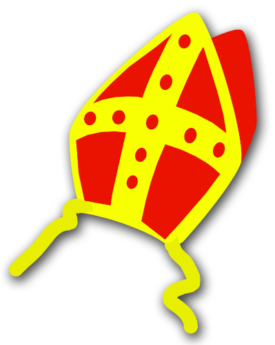
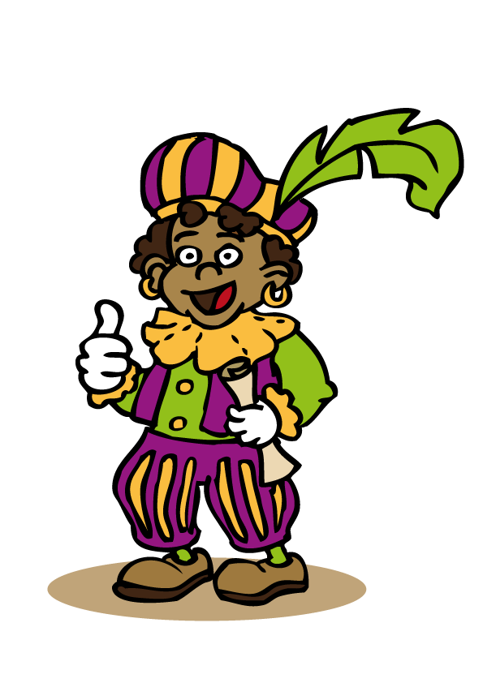

Maak een spelletje waar je als piet pakjes moet vangen die uit de lucht komen vallen. Hier vindt je een voorbeeld.
Of verzin zelf een leuk verhaal met sint en piet in de hoofdrol!
🔗 Handige links
scratch (log in met jouw eigen account of gebruik een
AEninja, vraag hulp aan een coach!)
scratch studio om alle projecten vandaag te
bundelen en te delen. Ga gerust eens kijken wat iedereen heeft gemaakt!
🎨 Prentjes die je kan gebruiken (of ga zelf op zoek!)



Klaar met je spelletje?
Probeer je spel nog interessanter te maken:
Momenteel kan je het spel enkel winnen, kan je jouw spel zo ombouwen dat je het spel verliest als
er 10
pakjes op de grond zijn gevallen?
Gouden pakjes! Deze zijn zeldzamer. Ze zijn veel zwaarder waardoor ze sneller vallen maar ze zijn
3
punten waard!